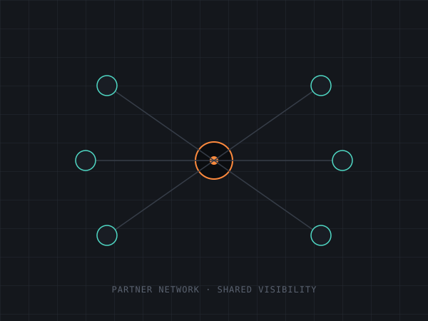

GPU utilization is dropping at three accounts. A champion's gone quiet. A competitor just started a POC at your biggest renewal. CS Pulse catches it the moment it happens — not eight weeks later at the QBR.
Learn feeds back into Watch — the loop compounds every cycle.
Dashboard → account health scores → context graph → CSM's top action for the day. One continuous walkthrough, narrated.
assets/videos/01-hero-overview.mp4CS Pulse recognizes the pattern while there's still time to change the ending.
Health score: 78, "healthy." But the champion's gone quiet, a QBR got skipped, and a competitor is running a POC. A dashboard that only reads the number misses all of it.
A new customer lands at $1.2M for a single rack. Adoption velocity across the rollout tells you exactly when they're ready to expand — before they've even budgeted for it.
A cooling failure takes a top account offline. The old playbook: a war room, finger-pointing, and a six-week scramble. CS Pulse has a faster one.
Health score reads "78 · Healthy" → context graph surfaces champion drop-off + skipped QBR + competitor POC → Silent Churn arc flags → Renewal Safeguard playbook fires.
assets/videos/02-silent-churn-detection.mp4Not a dashboard you check once a quarter. A closed loop that watches, detects, acts, achieves the outcome, proves it worked — and learns from it before the next cycle.
38 KPIs monitored continuously — chosen because they actually predict expansion and churn, not because they're easy to track.
A utilization drop plus a quiet champion plus a skipped QBR isn't three yellow flags — it's a pattern CS Pulse has seen before.
Your CSM's top actions for the day arrive ranked by dollar impact, with clear ownership — not buried in a report.
Renewal signed. Expansion closed. Crisis contained. The playbook doesn't end at "action taken" — it ends when the account is actually better off.
Every intervention keeps what triggered it, what was done, and what it protected or grew — ready for the board.
Every outcome — retained, expanded, or lost — retrains the model. Reinforcement learning recalibrates thresholds and playbook rankings against what actually worked, not what looked reasonable on paper. Then it feeds straight back into Watch.
No generic "engage the customer" advice. Every playbook fires on a specific threshold and hands your CSM a named next step.
Trigger: 5+ SLA breaches/month
Trigger: health below 70, renewal inside 90 days
Trigger: health above 80, usage above 80% of license
CSM daily actions view → playbook triggers → named owner assigned → dollar impact shown.
assets/videos/03-playbook-trigger.mp4CS Pulse adapts its health model to your vertical, then recalibrates monthly from your own outcomes.
GPU workload adoption drives expansion.
Deployment speed determines stickiness.
Capacity trajectory predicts growth.
Consumption patterns reveal intent.
Workload performance signals expansion timing.
Partner channel health is revenue health.

Partners have been running your accounts out of spreadsheets. You don't see their activity; they don't see account health. CS Pulse closes that gap without giving anyone a new tool to learn.
Every customer gets full data isolation, audit logging, and schema validation, regardless of plan.
Independent database schemas per customer. Not row-level filtering — actual separation.
Every API call, upload, and configuration change is logged with identity and timestamp.
Uploads pass schema validation and directory isolation. No cross-customer file access.
Out-of-range data is flagged, not silently absorbed into your health scores.
Authenticated sessions with inactivity detection and automatic expiry.
CSMs see their accounts, managers see the portfolio, partners see their slice.
AuctusAI was founded by Manoj Gupta, who spent 25 years in enterprise technology leadership at Oracle, IBM, Accenture, and DXC. CS Pulse comes directly out of that gap: dashboards that look good in a review, and intelligence that actually stops churn before it happens.
auctus — Latin: "increased, augmented, grown"
Bring your data, or use ours. Account health scoring and revenue intelligence live in two weeks — no rip-and-replace, no commitment.
Short muted loop of the dashboard breathing — health scores updating, a signal pulsing. No narration needed.
assets/videos/04-cta-teaser.mp4